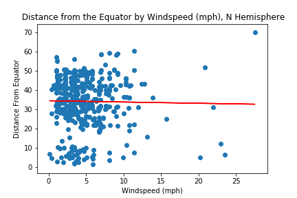
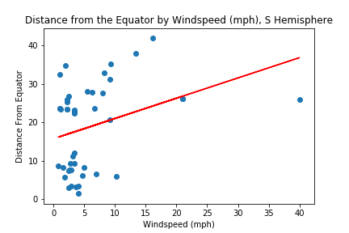

Weather Project

β =0.01579975
α =32.60656248
This chart is displaying the relationship between windspeed (mph) and the distance a city is from the equator. The regression coefficient is 0.01579975, a positive association. This means that for every one degree increase in latitude a city is from the equator, the model predicts a 0.01579975 unit increase in windspeed (mph). In other words, greater distances from the equator are associated with higher windspeed (mph). While the relationship between windspeed and distance from the equator may appear diproportionately weak, the variation in windspeed decreases as one gets further to the equator. This may be because the speed at which any given point on the surface at the earth moves increases as it's distance to the equator decreases. This is one of the properties of spinning objects: points further from the axis of rotation along the same plane move faster than points nearer to the center. This produces the wind pattern we see here, known as the coriolis effect.
By Hemisphere
Northern Hemisphere
Southern Hemisphere
